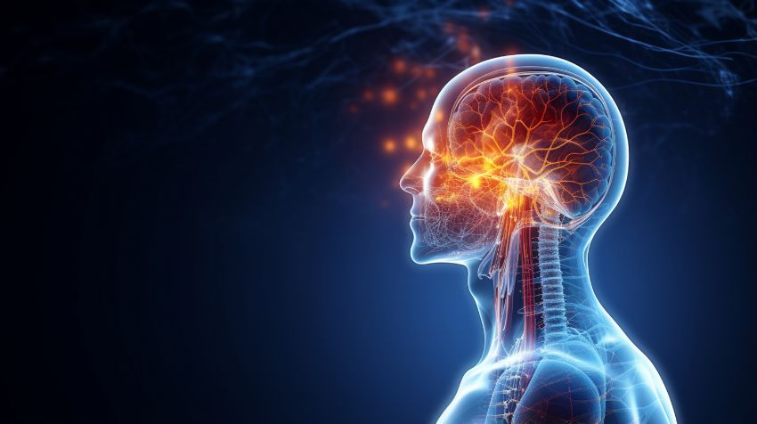

The human brain is in itself a wonder in every respect. It weighs only 1.5 kilos, makes up about 2% of total body weight and uses 20% of the body’s total energy.
It contains 100 billion neurons in all, and each of them forms about 10,000 synapses with other neurons. Altogether there are a quadrillion connections, making the human brain far more complex than any supercomputer, and with more connections than the electricity network of the whole planet. Yet it runs on the equivalent of around 20 watts of electrical power: astonishing performance with minimal energy use.
But what is the human brain? Is it simply a “meat machine”, a computer made of flesh, as a pioneer of artificial intelligence once put it? How does a single zygote cell, within a few months, give rise to an incredible network of neurons able to think, act, learn, perceive and so much more?
David has good reason to write: “I will praise thee; for I am fearfully and wonderfully made: marvellous are thy works; and that my soul knoweth right well.” (Psalm 139:14)
Think, for example, of how we see. Electromagnetic radiation enters through the pupil of the eye and stimulates the right photoreceptors in the retina. These convert the stimulus into an electrical signal, which is passed along the optic nerve to the back of the cerebral cortex (the occipital lobe). From there it is sent to various centres of the brain, which achieve both the perception and the understanding of the image. And all of this happens in thousandths of a second, continuously and without any effort on our part.
The brain also has an amazing ability to change and adapt: synaptic plasticity. Memories, knowledge, skills and new information are stored in the brain as new connections are formed and older ones are modified. It is a “computer” that is constantly changing its own hardware.
And as if that were not enough, if a part of the body is lost (for example, if a hand is amputated), the brain is able to give new functions to the brain cells that controlled the lost part. Those neurons are not wasted but put to the fullest use in other processes.
Medical students try to study and understand the most complex organ in the universe, and psychologists struggle to explain different behaviours as the result of the chemistry of neurotransmitters.
How can anyone attribute the structure and function of the human brain to the theory of evolution? How can such perfection, which the greatest scientists in the world cannot understand, be explained by the processes of natural selection and random mutations?
See today the hand of the Creator God in your own body. Marvel at His wisdom in the working of your own brain. And cry out with the psalmist: “O LORD, how manifold are thy works! in wisdom hast thou made them all: the earth is full of thy riches.”
The “Christianity & Science” team
www.christianity-science.gr
Published in the team's column in the newspaper “Christianity”, .